Referencia del usuario y captura real local, con fondo amplio y controles HTML funcionales.
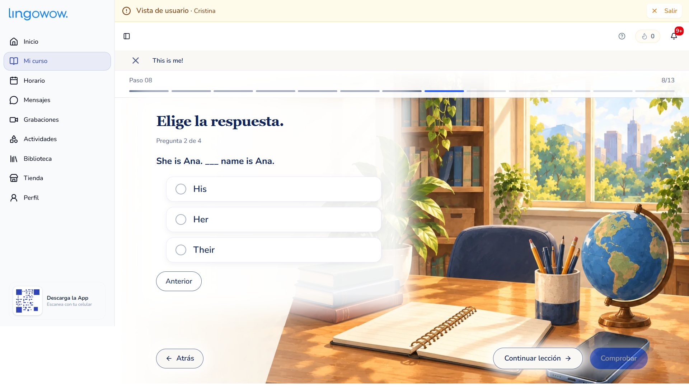
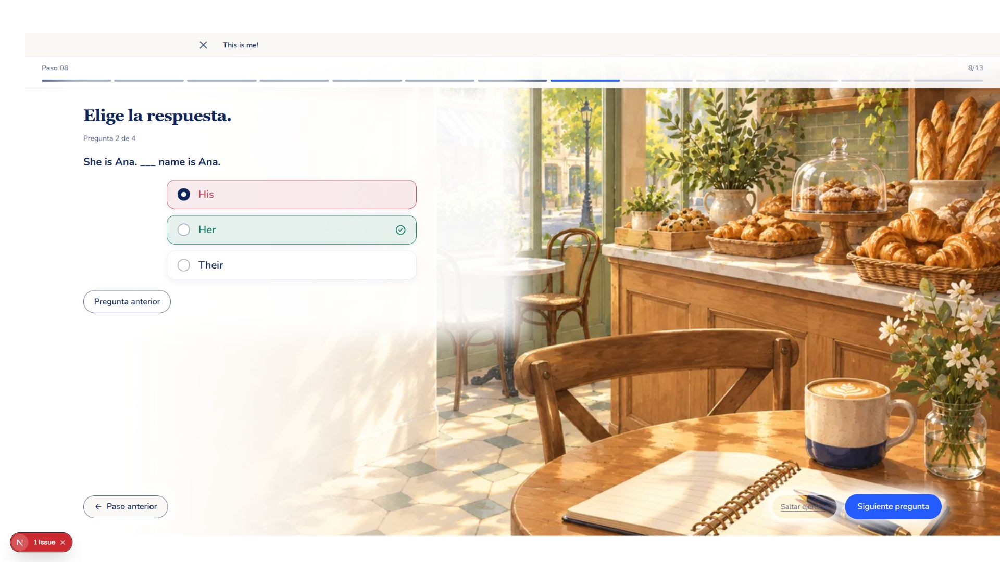
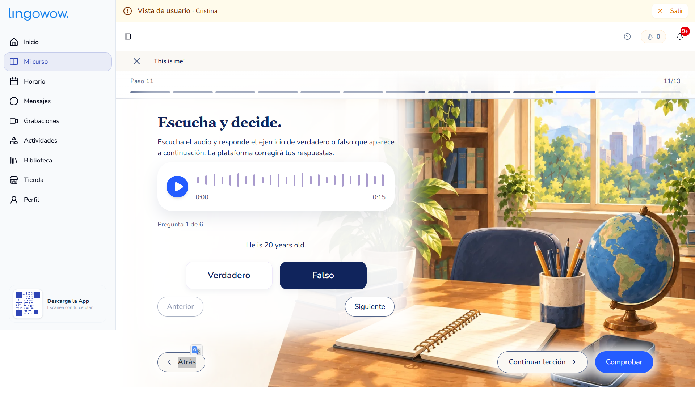
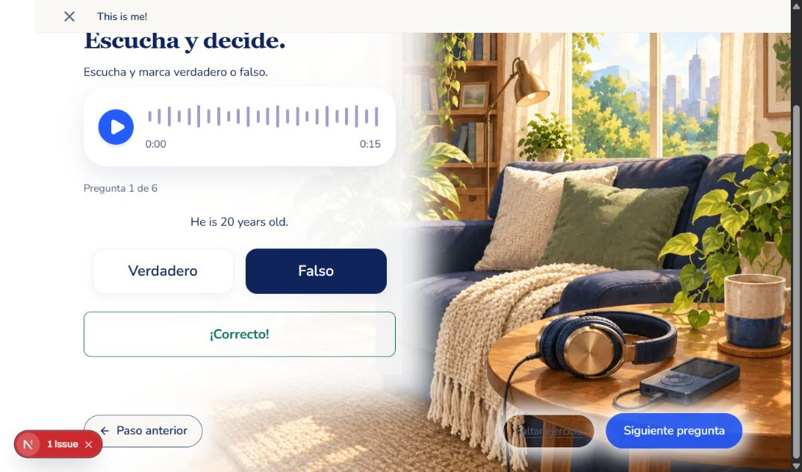
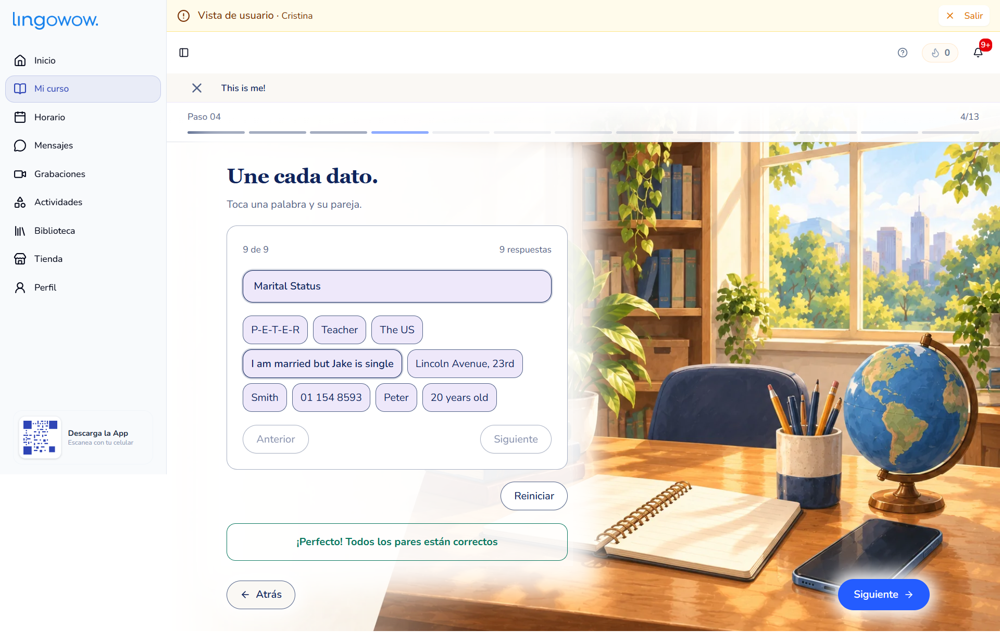
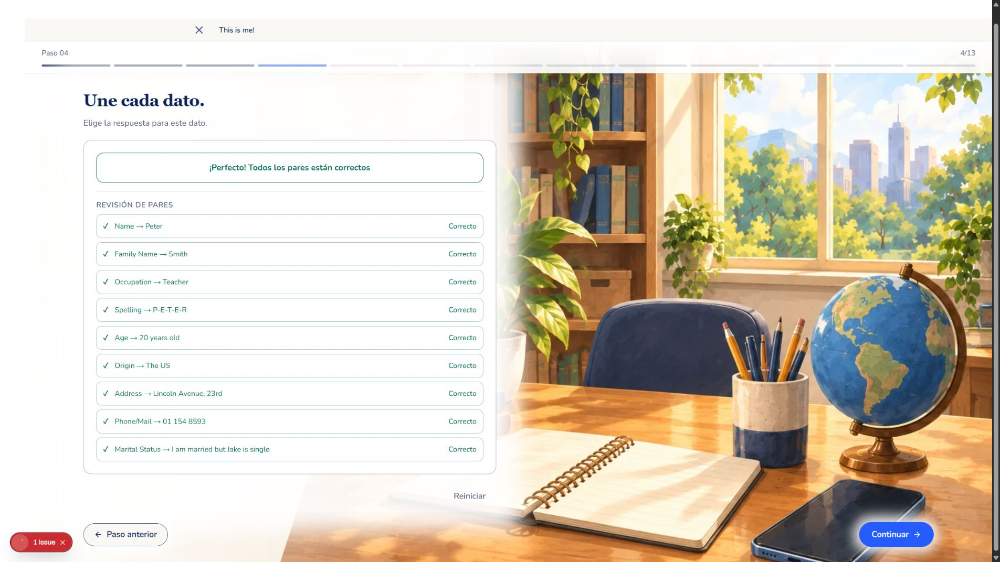
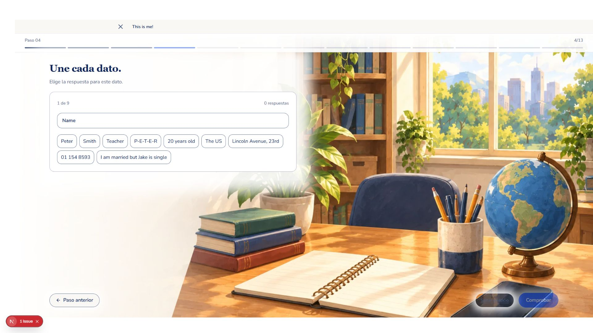
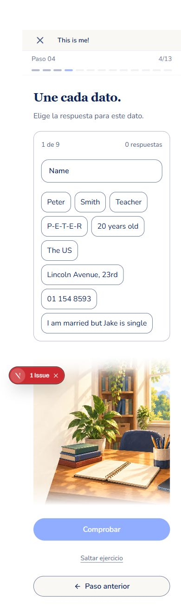
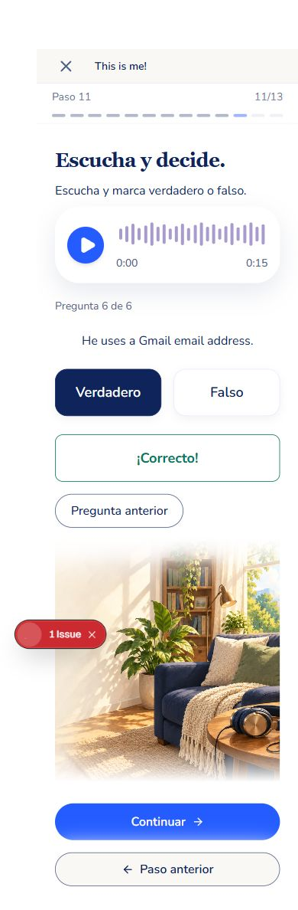
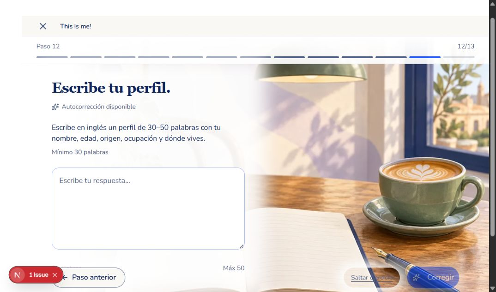
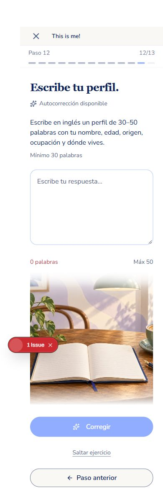
Capturas locales con bloques reales. Estados IA y grabación activa cubiertos por pruebas; no se enviaron calificaciones ni se grabó audio de estudiantes.